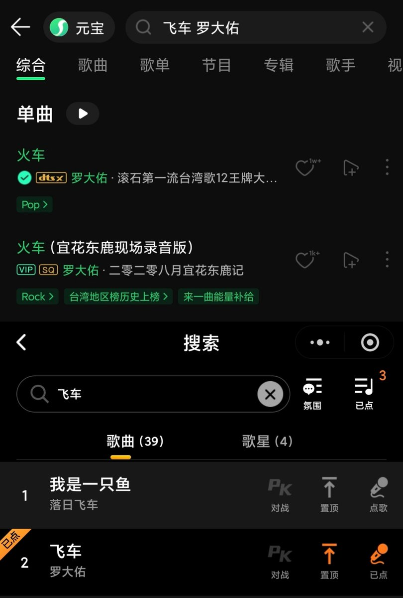
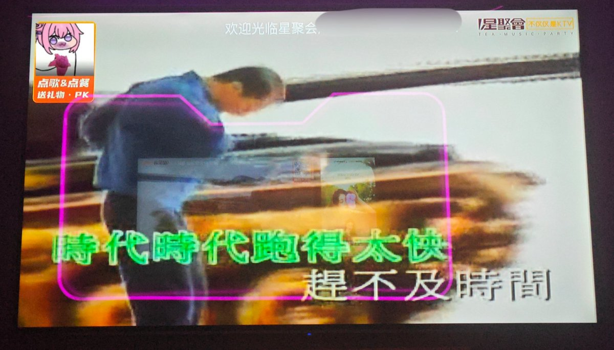

奶昔🥤
@realNyarime
主打一个，你有我没有，我有你没有


奶昔🥤
@realNyarime
到星聚会点了几首歌，还是挺震撼这家连锁KTV的逆天曲库
不仅罗大佑的「飞车」有资源，还有坦克过大关及港人北上攻略，不过闽南语版的「火车」没了但QQ音乐有？
不过像扬声的MV会有仅限台湾地区使用的标识，以及白色透明「TAIWAN ONLY」大字出现
似乎国内可以无视对岸的MV版权，所以确实挺野的😂😂😂 https://t.co/K6pZmQjXTH